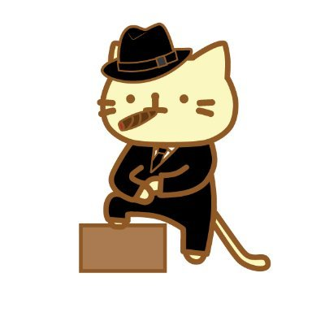
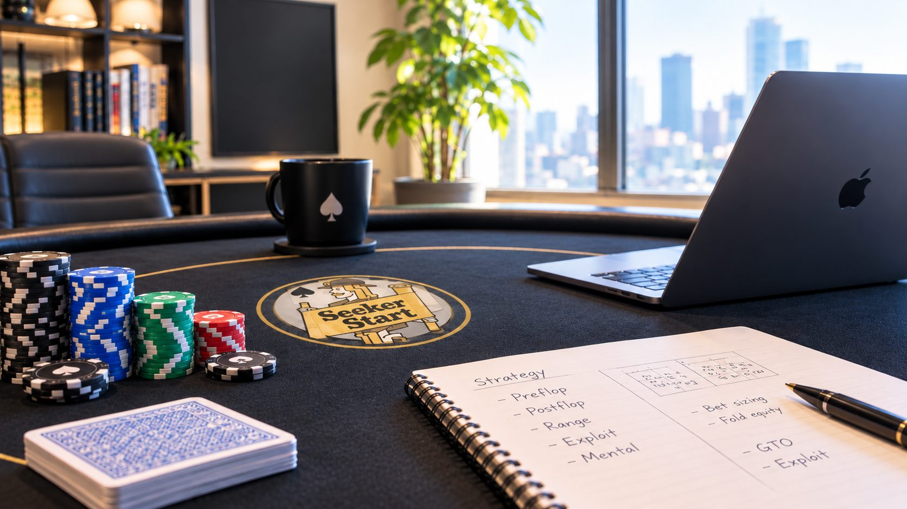
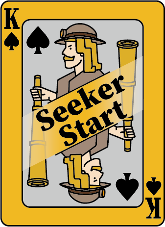

紹介動画（準備中）

【肩書き：準備中】
ARASH!
【プロフィール文：準備中】
- ポーカー歴
- 準備中
- 得意なゲーム
- 準備中
- 主な実績
- 準備中

ANALYSISSTRATEGYDECISION MAKING
そのアクション、
理由まで説明できますか？
考え方から身につける、キャッシュゲームのコーチング
ABOUT
動画や記事で戦略を学んでも、実戦では何となくベットしてしまう。
GTOを勉強したいけれど、難しくて何から手をつければいいかわからない。
Seeker Startのコーチングでは、そんな悩みに向き合い、前半3回で実戦に必要な思考プロセスを学び、感覚頼りのプレーからの卒業を目指します。
後半2回では、GTOや戦略教材を自分で読み解き、学習を進める方法を習得。
終わりの見えない勉強ではなく、学ぶべきことを整理し、自分の力で成長していくための道筋をつくります。
PROBLEMS
概念やtipsをたくさん取り入れるが、実戦に結びつかない
preflopは覚えたが、flop以降の指針がない
GTOと照らし合わせて正解不正解だけを見ている
GTOを学び始めたが、何に注目すべきか分からない
自分のプレイが正しかったのか？具体的な検証方法がわからない
CONCEPT
考え方を学び、学び方を身につけ、自ら成長できるプレイヤーへ。
THINK
前半 第1〜3回
実戦に必要な思考プロセスを学び、感覚頼りのプレーからの卒業を目指します。
LEARN
後半 第4〜5回
GTOや戦略教材を自分で読み解き、学習を進める方法を習得します。
GROW
GOAL
学ぶべきことを整理し、自分の力で成長していくための道筋をつくります。
CURRICULUM
1回約2時間。どの回も単発で選んで受講できます。
THINK
前半 考え方を学ぶ
第1回
バリューとブラフ、Preflop→Flopのレンジの絞り込み
第2回
Flop→Riverのアクションによるレンジの絞り込み、効果的な応答
第3回
よくあるリークの類型と観測、テルによるレンジの分割
LEARN
後半 学び方を身につける
第4回
ポーカーに関連する算数と発展概念を学ぶ
第5回
ポーカーの本質をtoy-gameで学ぶ
GROW
ゴール 自ら成長する
WHY SEEKER START
01
鉄強会を100回以上やって分かった、初心者が迷いやすい場面を中心に扱います。
02
正解のアクションを覚えるのではなく、「なぜそのアクションなのか」を説明できるまで一緒に考えます。
03
前半で思考プロセスを、後半で学び方を。学ぶ順番が決まっているので、何から手をつけるか迷いません。
| 項目 | 独学（動画・記事など） | Seeker Start |
|---|---|---|
| 学ぶ順番 | 何から手をつければいいか、自分で探す | 全5回の学習テーマで整理済み |
| 実戦とのつながり | 知識が実戦に結びつきにくい | 実戦に必要な思考プロセスから学ぶ |
| 振り返り | 正解・不正解の確認で終わりがち | 判断の理由を言葉にして検証する |
| 疑問の解消 | 一人で抱えがち | コーチに直接質問できる |
| 受講スタイル | ― | オンライン・対面、1回から受講可能 |
COACH
紹介動画（準備中）

【肩書き：準備中】
【プロフィール文：準備中】
PRICE
まとめて受講する場合の目安
THINK
前半 第1〜3回
45,000円（税込）
LEARN
後半 第4〜5回
30,000円（税込）
ALL
全5回
75,000円（税込）
※ 1回ごとのお支払いです（15,000円 × 受講回数）。
FLOW
受けたい回や、いまの悩みをLINEでお気軽にお送りください。
LINEで日程を調整し、お支払い方法をご案内します。
日程が決まったら、コーチングを開始します。
FAQ
はい。ルールを把握していれば大丈夫です。レベルに合わせて進め方を決めます。
はい。全5回のどの回も、単発で選んで受講できます。
PayPay または 現金でのお支払いです。料金は1回（約2時間）15,000円（税込）で、1回ごとの都度払いです。
オフライン（対面）・オンラインのどちらでも受講できます。
オフライン：場所はお申し込み後に調整します。
オンライン：お客様のご希望のツールで行います。
受講予定日時の24時間前まで、キャンセル・日程変更が可能です。公式LINEからご連絡ください。

CONTACT
公式LINEを友だち追加して、気軽にご相談ください。
オンライン・対面どちらも対応しています。